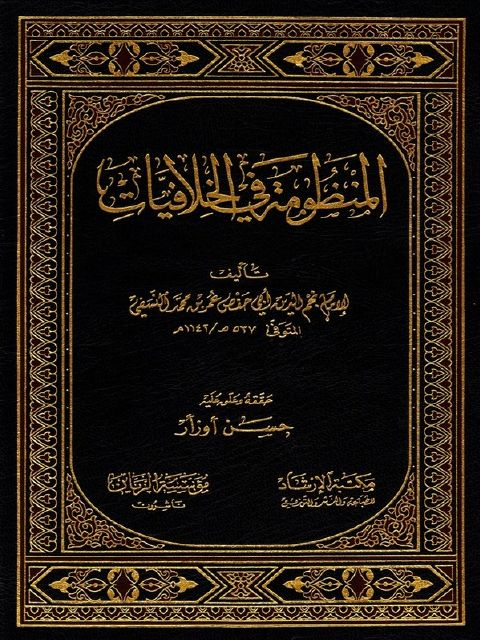

Downloads need an internet connection.
المنظومة في الخلافيات
Authors: نجم الدين أبو حفص عمر بن محمد النسفي
Editors: حسن أوزأر
Publishers: مؤسسة الريان مكتبة الإرشاد
**▫️ العنوان: المنظومة في الخلافيات** ▪️ المؤلف: #نجم_الدين_أبو_حفص_عمر_بن_محمد_النسفي ▫️ المحقق: #حسن_أوزار ▪️ الناشر: #مكتبة_الأرشاد • #مؤسسة_الريان ▫️ تاريخ النشر: 1431هـ 2010م ▪️ بلد النشر: بيروت، #لبنان • استانبول، #تركيا ▫️ الطبعة: 1 ▪️ عدد الأجزاء: 1 ▫️ الصفحات: 788 ▪️ نوع الوعاء: #كتاب ▫️ التصنيف الرئيسي: #الفقه_وأصوله ۪